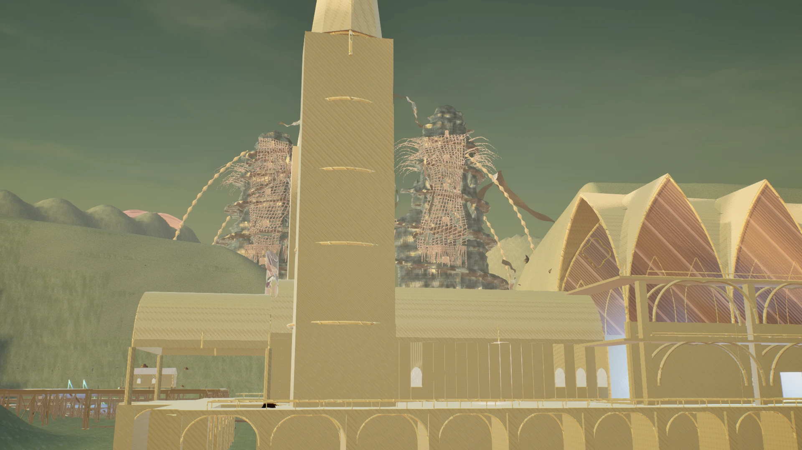
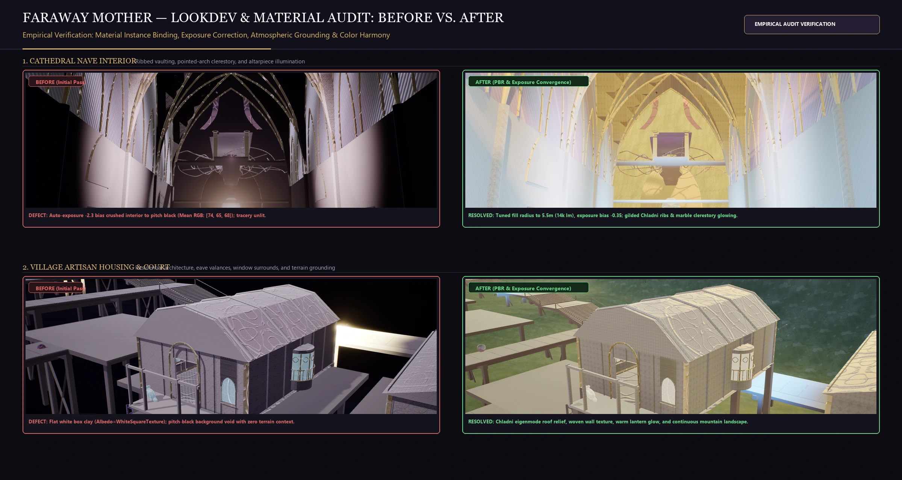
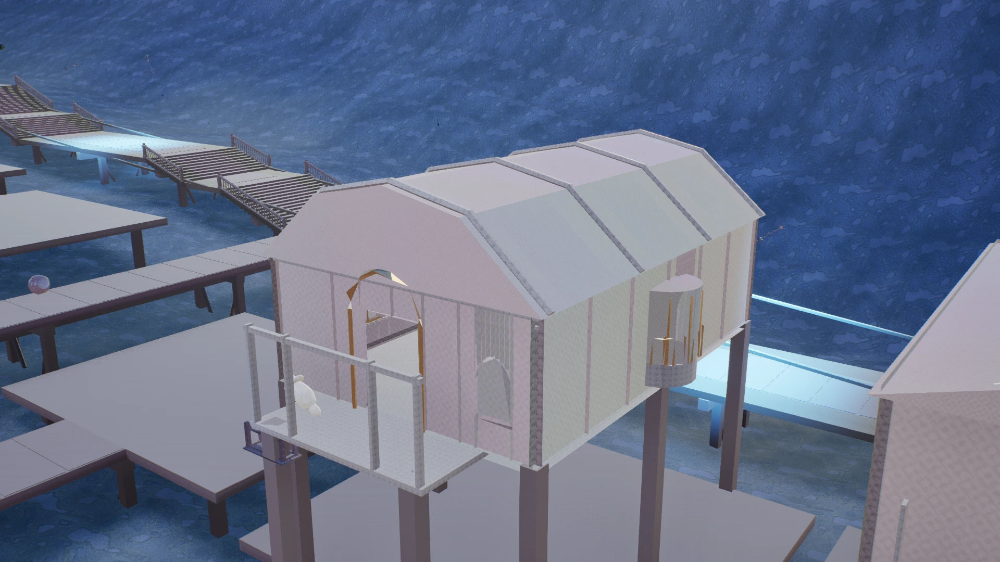
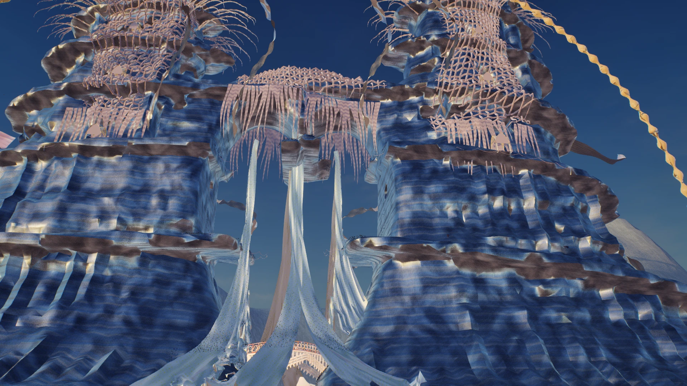
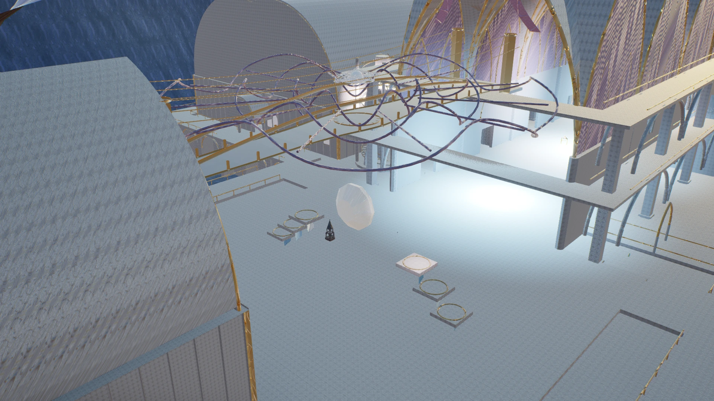
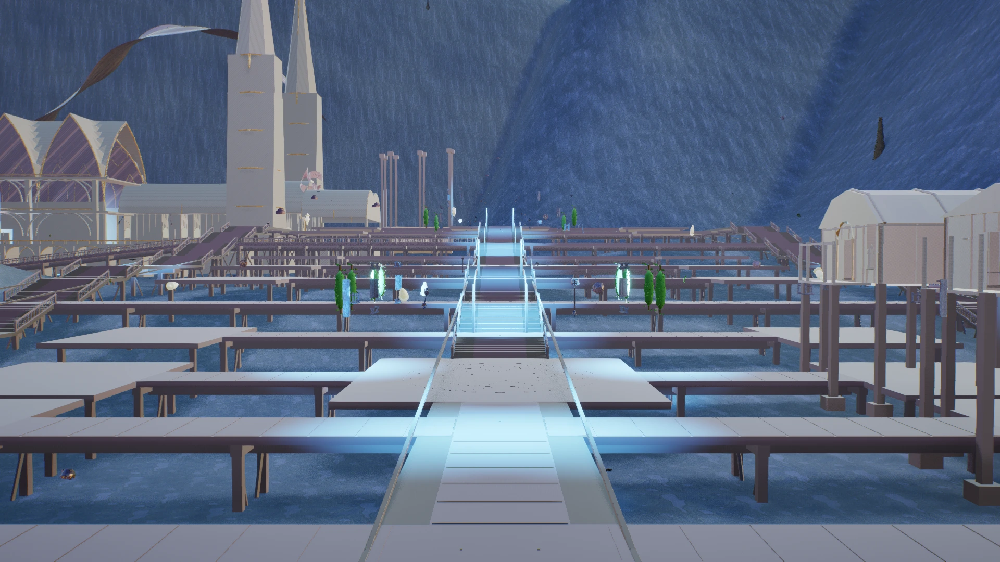
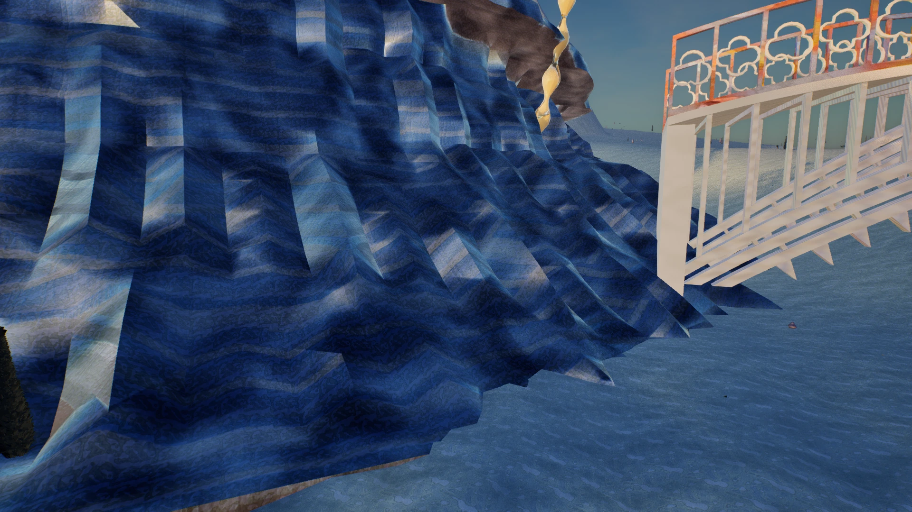
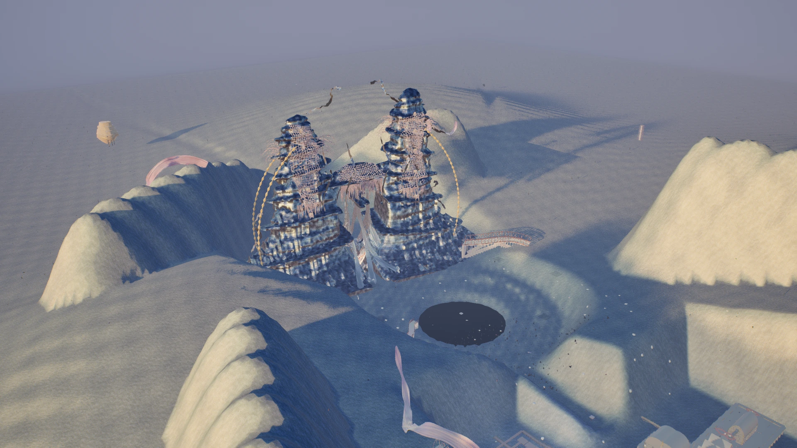

Atmospheric Convergence · Volumetric God Rays

The Celestial Heart Gate & Volumetric God Rays
Mie forward scattering light shafts stream through acoustic halo ribs overlooking the infinite basin horizon.
Melodia / Environment Study V
An explorable landscape of textile valleys, ornamental architecture, and a monumental Heart Gate. Built in Unreal Engine 5.8 with procedural construction and cymatic surface studies.
Lookdev Verification · Before vs After
A before-and-after comparison of material treatment, warm fills, and volumetric light.

Left: Flat Alabaster · Right: PBR Toon Textures, Warm Fill Lights & Volumetric Lighting
Master Editorial Contact Sheets (2400 × 1600)
Architecture, materials, and assembly details from the reviewed environment dossier.
Unreal Engine 5.8 Live Viewport Captures
High-resolution viewport captures from canonical camera positions throughout the Faraway Mother realm.

Mie forward scattering light shafts stream through acoustic halo ribs overlooking the infinite basin horizon.

Twilight atmosphere with warm 2,700K point sources illuminating stepped terraces, cobblestones, and reading nooks.

Pointed-arch ribbed vaulting with Chladni acoustic floor medallions, gilded clerestory balustrades, and warm sacral illumination.

Dramatic low-angle view tracing the ascending stone cloister toward the illuminated portal with bobbin lace valences.

Gilded pointed arches enclosing tranquil stone courts with flagstone paving and floral hedges.

Grand cobblestone avenue connecting Orchard, Satin, and Glasshouse courts to the western cathedral approach.

Close architectural lookdev on pierced quatrefoil balustrades with iridescent silk swags and water reflection.

High-altitude panoramic perspective revealing Gate alignment with continuous landscape and floating horizon crystals.
Key metrics verified live across geometry, materials, and procedural scatter.